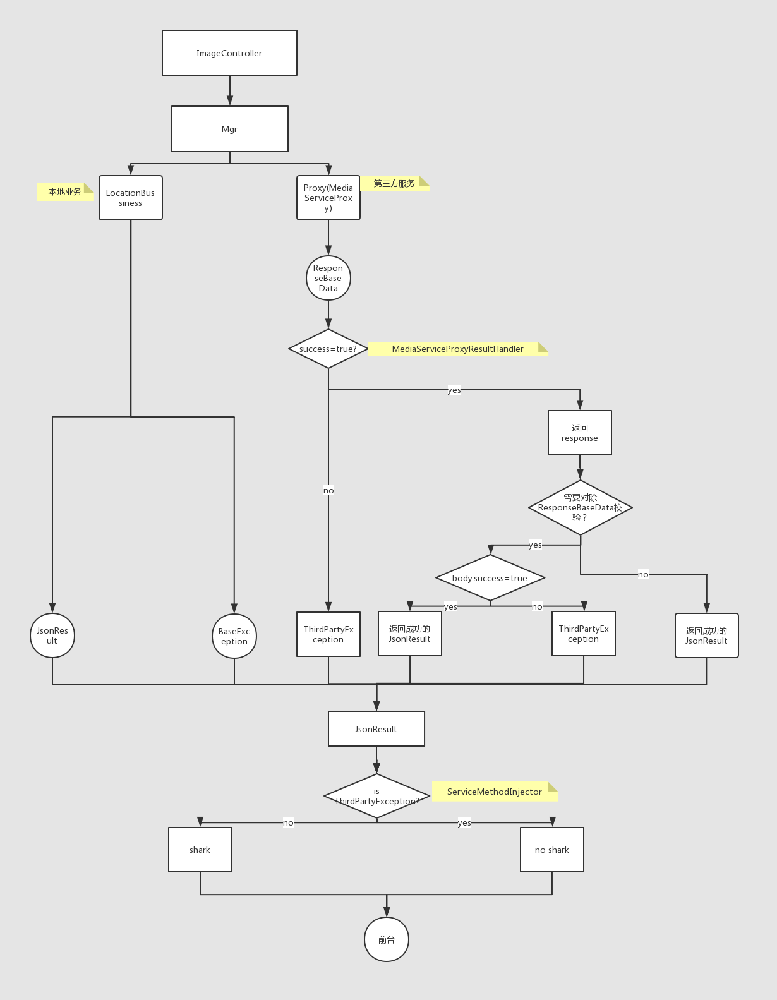
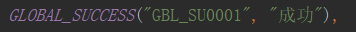
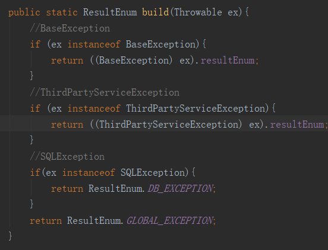
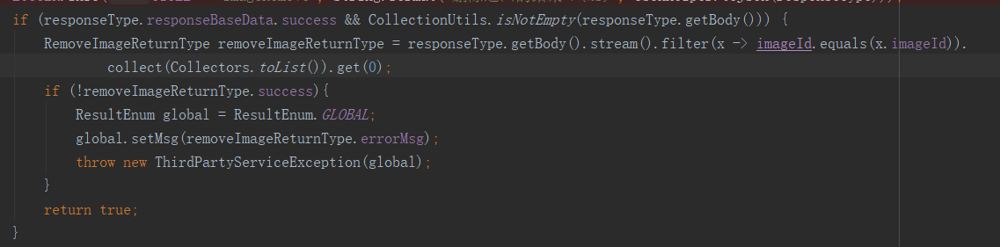
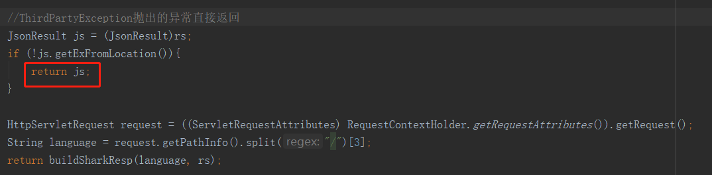
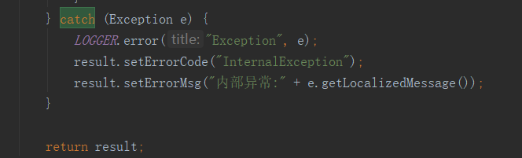

<!-- <html>

<head>
    <title>SwinBlackSea.how_to_use_exception</title>
</head>

<body>
    <pre style="font-size: 16px;">
        <strong>发件人: </strong>wlj王伦佳
        <strong>发送时间: </strong>xxx
        <strong>收件人: </strong>xxx
        <strong>主题: </strong>关于中台接口的一点思考
        Dear All：
        关于中台接口的一点思考：
        首先，我认为的中台接口应该能提供以下几种能力：
        1. 具体Exception(能够非常详细地展示在页面)的能力，避免单一的Exception
        2. BaseException(本地Exception) 在本地维护、ThirdPartyException在第三方维护
        3. BaseException国际化在本地维护，ThirdPartyException国际化在第三方维护
        4. 国际化的ThirdPartyException在中台不进行翻译，直接透传到页面
        5. 接口层的SharkKey能区分page和key并且shark翻译不会和第三方相同的code有冲突
        6. 所有接口统一返回JsonResult，即使是Exception也会被封装到JsonResult中
        为实现以上能力，目前对portal架构做了以下改造：改造图:
        
        关于这次改造有几点需要注意：
        1. 建议所有需要展示在前台的错误全部放在ResultEnum这个枚举类中，code最好不要变，因为code会作为sharkKey中的一部分
        
        “GBL”作为page,”SU0001”作为key的最后部分   最后的key组装为key.v.page.GBL.SU0001
        2. 建议代码中需要抛出Exception的时候都能使用BaseException,这样会在切面里面统一进行shark翻译，目前只对三种Exception做了特殊处理：
        
        其他Exception统一返回GLOBAL_EXCEPTION
        3. 建议对从Proxy中拿到的response做AfterReturning切面处理，只要success=false统一抛ThirdPartyException，否则直接返回，目前只对MediaServiceProxy做了处理，其他服务根据后面国际化进度的推进改造
        
        4. 建议对从Proxy中的返回值response在业务中做校验时失败的时候统一抛ThirdPartyException，eg:imageDelete接口具体imageList删除状态放在body中的，responseBaseData.success一般都为true
        
        5. 为什么第三方服务最好使用ThirdPartyException？因为切面会校验exception是不是ThirdPartyException，如果是就不会走shark(防止重复的key导致翻译失真，也为了更好地朔源)
        
        6. 建议能抛异常的尽量抛异常，将异常放在data里面消化并不是理想的方式，因为页面感知不到
        Eg:
        
        这种在最外层被JsonResultHelper封装到data中了，并不会在页面感知，所以最好能以BaseException抛出
        7. 目前ImageController对以上所有的想法都进行了改造，并独立出来JsonResultHelper.successV2和JsonResultHelper.failureV2以及ResultEnum等类，目的是不影响其他controller的调用，
        Image前台逻辑的判断也全部由code==‘1’改为code==’ GBL_SU0001’
               以上便是今天关于中台接口对详细报错能力的支持、对国际化的统一支持等 方面的些许思考，希望后面大家能一起讨论把中台做的更好。
     </pre>

</body>

</html> -->